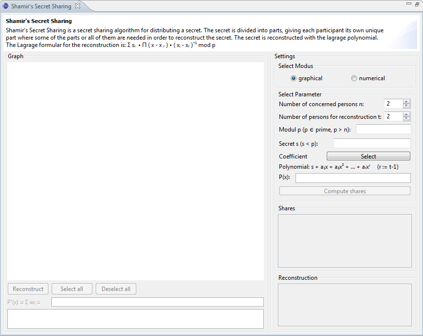
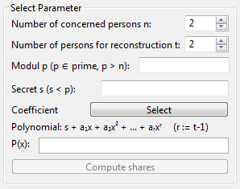
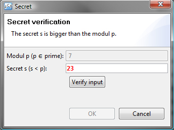
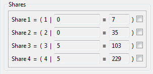
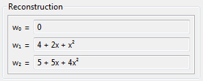
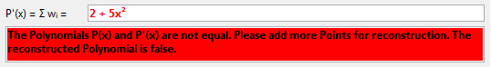
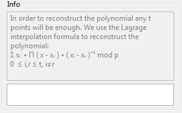
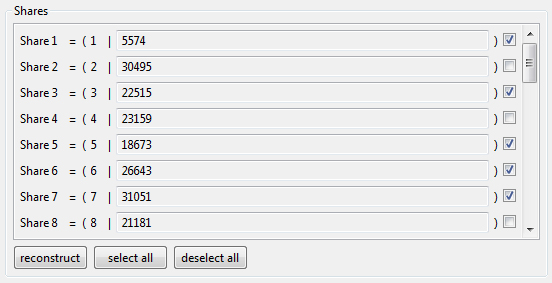

Shamir's Secret Sharing
The demonstration is to show the functioning of the Shamir's Secret Sharing plug-in.
You can start the Shamir's Secret Sharing plug-in using the menu visualizations and maximize his view.

The plug-in is divided into three sections: the header, the graphic or numeric field and the Settings area.
In the header is a short description of the plug-in. In the graphic or numeric field shows the visualization and in the settings area the parameters are set. First the user decides whether a graphical or numerical representation of the plug-in like. He can in the do this in the settings area under the select mode area.

Depending on which mode the user chooses to change, except for the adjustable parameters in the Settings area, the view of the view area. Here is shown the numerical mode.

Defining the parameters for the calculation
Regardless of which mode is selected, you can set parameters in the Select parameters area necessary for the conduct of the algorithm. You select the number of persons to be distributed to the Shares and the number of persons needed for reconstruction. Futhermore you choose a prime p as module and a secret s which is smaller than the module for the calculation.

By pressing the Select button opens a dialog box where you can select the coefficients of the polynomial. The coefficient a0 is the selected secret and can not be changed. Allowable values for the coefficients are only positive numbers with the zero to the upper limit p-1. It is also possible by pressing the buttons generate coefficients to generate valid values.

Press the OK button the dialog box is closed and the polynomial represented as a formula. If the value for the module parameter p, should not be a prime number, opens a dialog box where you can correct the input.

The invalid value is shown in the color red. The user has now the opportunity There to generate a prime number, starting from the number that was entered or to enter their own number. If you generate a number by the program the button input verify disables because the proposed value is valid and the verification is not necessary. You can now generated more numbers by pressing the next prime button. If the user makes an entry, the number is first shown in black in color. The user have to verify the entered number by the program. He presses the button. If it is a prime number, the number is highlighted in green and activates the Ok button, otherwise the number is colored red and the user must either enter a different number or the program can generate a valid primes. Once a valid prime number is entered, the user can leave the dialog with the OK button..
Now it may be that the secret s either less than before the verification dialog or meanwhile, through the user's input is smaller now than the module. In this case, opens another dialog to the condition that the secret s is strictly less than the modulus p must be fulfilled, too. The user can now change the secret s, in which he enters a smaller number than the modulus p. For a better overview of the module is shown above. The user input must be verified by pressing the check input button.
If the value of the secret s is smaller than the modulus p, the value is shown in green, otherwise in color red. If it is a valid value, the Ok button is activated and the user can leave the dialog with the OK button.

Now you can press the compute shares button to calculate the shares to be distributed to the people.

The graphics mode
The calculated shares are displayed in the region shares.

On the left side the corresponding graph of the polynomial is represented in the graph area. The individual shares are shown in the graph as points in the color magenta.

You can select the shares that you want to use for the reconstruction with the checkbox. The selected shares are represented in a different color for better navigation. You must select at least two shares, thus the Reconstruct button is activated. To select or deselect all shares, you can also use the buttons Select all or Deselect all.
After this selection performed by the reconstruction button the reconstruction of the polynomial is calculated.
In the area of reconstruction, the interim results of the calculation are displayed.

In the lower part of the graph polynomial of the reconstructed area is shown. This results in the color is green, if the polynomial has been fully reconstructed and selected the color red, if not enough points were selected for reconstruction.

n the event that the polynomial was not properly restored, the two polynomials represented as a graph in different colors.

You can go any time with the mouse cursor over the dots, allowing to display the current share. Course, the share appears when the mouse is over the point in the graph, and if not disappear.

The numeric mode
The numeric mode is suitable for large numbers. the Select Parameter field is identical to the graphics mode and has been described above. On the right side down is the notification area is shown in which the calculation formula and the respective final result after the calculation.

The left side is divided into two areas the shares and the reconstruction area. In the shres ares the calculated share are shown. The area is well suited for large values.

Again you can select by checkbox, the respective shares for the reconstruction. To deselect all or to select all you can use the buttons deselect all or select all. Again, you must select at least two shares, so you can press the Reconstruct button.
Thereafter, the intermediate results are shown in the reconstruction area. The reconstructed polynomial is including green in color, if the reconstruction was successful and red in color, if too few shares were selecting appropriate.

Also spent an information in the notification area in addition to the final result.